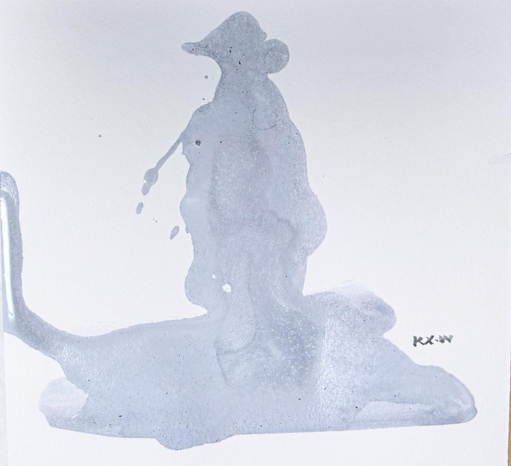

Inner Force
内势

- Artwork ID / 作品编号
- KW-A-000001
- Year / 年份
- 2026
- Medium / 媒介
- Acrylic on paper / 纸本丙烯
- Dimensions / 尺寸
- 19.5 × 18.5 cm (H × W / 高 × 宽)
A grey form gathers and rises with an internal sense of support and pressure. It may suggest a body or an organ, yet resists becoming a fixed image. The work focuses on force before it is named: an inner tendency that holds, pushes and transforms form.
灰色形态向上聚集、支撑，隐约带有身体或器官的联想，却不指向任何具体对象。作品关注一种存在于形态内部的力量：它尚未被命名，却持续维持、推动和改变着自身。